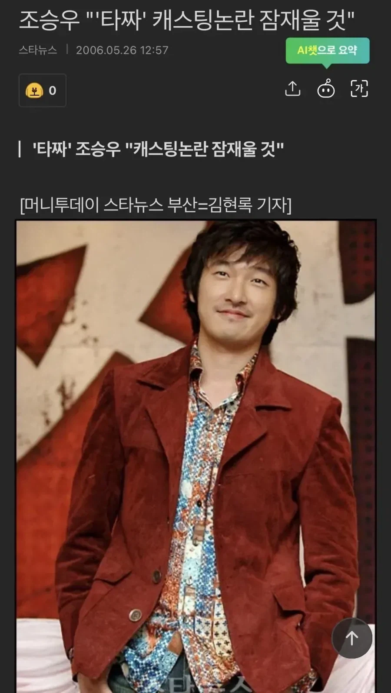

연기로 증명하겠다 레전드
댓글
코를 만지면
팬티를 보이면
싸라
닦어~
내가 팬티를 보여주면 코를 만져라
ㅋㅋㅋㅋ
팬티를 만져라~
코를 빨아라
어유 여기가 호구 양식장이네
아귀가 밑에서 할짝
ㄹㅇ이네
얼굴이... 쵸깐네
야! 깡~~패야
그리고 전설을 찍었제..
타짜1 플롯도 개쩔었고 거기에 걸맞는 연기이기도 했다 ㅋㅋ
연기 증명이 아니라 전설이 되었고
난 타짜1 특유의 화면 색감이 너무 좋음 꼭 화투 그림같은 느낌이라서 너무 잘어울림 근데 2부터는 화면 색감을 신경 안쓰는거 같더라
나도 타짜2는 색감 별로라고 생각하는데 같은 감독의 스윙키즈는 색감 진짜 괜찮았음
캐스팅 논란있었는지도 몰랐네
연기력 논란은 아니고, 캐릭터 매칭이 안된다고 논란이었음. 원작의 고니는 평경장 보디가드 할만큼 등빨 좋고 싸움도 잘하는 캐릭터인데, 조승우는 키도 작고 좀 여리여리해보이는 스타일이라 쟤는 이미지가 너무 다른데? 하고 논란있었음.
조승우 타짜되기전후 눈빛부터 다른게 레전드
논란? 아가리
지금은 조승우가 아닌 타짜는 상상도 못할지경에 이름 ㅋㅋ
아주 그냥 시발 푹 자버림
고니를 그냥 창조함
논란 잠재우고 고니가 되버린 그
저 당시 26살이 그냥 레전드다 ㅋㅋㅋㅋㅋㅋㅋ

20대가 저런연기를 ㅎㄷㄷ
타짜 시리즈의 기준을 세워버렸지 ㅋㅋㅋㅋㅋ
모든 후속작 나올때마다 일단 욕부터 먹음 ㅋㅋㅋㅋ
타짜1 너무 잘해서 후속작이 망햇서
올타임 리빙레전드가 되버린...
원작에선 고광렬한테 정체 숨기고 보디가드로만 활동했을만큼 덩치 좋음